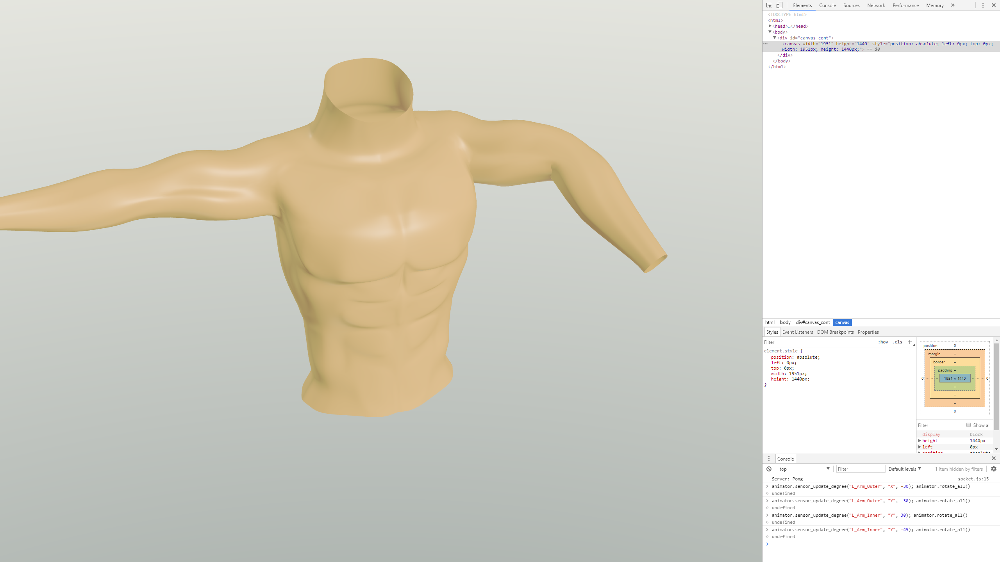

MCU (Main Processor Unit)
The main processor unit comprises of the ESP32-WROOM module from espressiff. The power of the MCU is far greater than any AVR solution and even integrates a built-in WiFi antenna. The main PCB also houses the LDO, LiPo connector, Battery protection circuit, USB-serial converter and USB-ports, which are all needed for nominal performance. The size of the main PCB has been reduced to a remarkable 61x50mm (2.40x1.97 inch) enclosure to ensure the best esthetics and comfort we can accomplish without compromises.
The MCU connects to external IMU sensors right off the board, with the help of snap fasteners, to ensure easy attachment and deattachment of the MCU itself from the smart clothing.
IMUs (Inertial Measurement Unit)
The inertial measurement units (or IMUs for short) are state of the art 9 DoF (Degrees of Freedom) sensors which make it possible to precisely map the movements of the user and deliver reliable information to the server. The IMUs used in this product are the MPU-9250s from Sparkfun and their 3D-printed enclosure ensures that the precious sensors are safe and sound from external sources.
The IMUs have a acelerometer, gyroscope and a magnetometer, all in a small package. Every gyroscopic sensor experiences drift overtime, and this drift can be recalibrated and fixed with the data coming in from the accelerometer. However in cases, which the the sensor (and the user) is moving, the accelerometer experiences 'vibrations' which make it's data useless in recalibrating the gyros
when the subject is in movement. This problem is overcome with the help of a magnetometer, which gives us the exact orientation of the sensor so that recalibration is possible and the clothing can continue to deliver accurate sensory data for a prolonged period of time.
The Web Interface
The ESP32-WROOM first connects to the domain where the website is hosted (in this case Aalto University) using the web socket protocol, then the data is processed on the server and sent to the web interface (in the browser) through another web socket protocol, where the data is used to control a 3D model of a torso.

As the image above illustrates, the web interface is very dymanic and easy to use. Set up everything and the smart clothing is sending data directly to the interface, which processes the information. Then the model replicates the exact movements of the user in real-time.
The Clothing
The clothing uses an elastic and breathing material as the base of the wearable. It is comfortable to wear and tight enough that it provides a good base for the sensors. The MCU connects to the clothing itself with the help of snap fasteners, to which wires have been routed through the fabric of the clothing itself. The MCU is located in the pocket of the clothing, which makes removing and using the MCU easy and convienient.
 The sensors connect to the clothing itself, using bands made from strethcing fabric and velcro and with the same snap fasteners as the MCU. This makes them modular and easily removable,
so that the shirt can be machine-washed, without harming the sensitive electronics. This design also makes it possible to, for example only use two sensors to map the movements of one arm,
if the user doesn't have 5 sensors in total. This offers flexability to the end user, if he/she doesn't want to invest in more sensors.
The sensors connect to the clothing itself, using bands made from strethcing fabric and velcro and with the same snap fasteners as the MCU. This makes them modular and easily removable,
so that the shirt can be machine-washed, without harming the sensitive electronics. This design also makes it possible to, for example only use two sensors to map the movements of one arm,
if the user doesn't have 5 sensors in total. This offers flexability to the end user, if he/she doesn't want to invest in more sensors.
The Cases
The clothing houses the MCU PCB as well as the IMUs in 3D printed enclosures. These were custom designed specifically in SketchUp, to ensure that the openings and sizes are correct and sleek for our applications. All the material, including the 3D-models are available on the project's GitHub page.